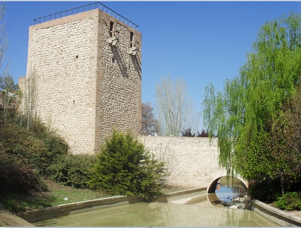

Capital de provincia en la comunidad autónoma de Castilla-La Mancha. A destacar:
Guadalajara es la capital de provincia a la cual toma su nombre, con una población de 84000 habitantes, posee una gran historia cultural que comienza con la fundación de los árabes y continua reflejando la historia de la reconquista.
El alcázar sobre el barranco del Alamín , a la entrada de la ciudad desde Madrid, es uno de los pocos restos que quedan de la antigua wad al-Hayara.Los primeros indicios de la actual ciudad de Guadalajara datan del siglo VIII , como una ciudad amurallada de la cora de Santaveria , en la Marca Media andalusí , llamada madinat al-Faray, a orillas del wad al-Hayara , actual río Henares y que poco después cedería el nombre a la ciudad. La iglesia de Santa María fue símbolo del nuevo poder cristiano en la ciudad al ser instalada en una antigua mezquita .La conquista de Guadalajara por el Reino de Castilla se enmarca dentro del proceso de conquista de la taifa de Toledo . Guadalajara fue protagonista de algunas incursiones de saqueo a cargo de Fernando I de Castilla a finales de los años 1050 . Sin embargo, hasta finales del siglo XI Guadalajara no pasa a manos del rey de Castilla , entonces Alfonso VI . Tanto la supuesta autoría como el hecho mismo de la conquista definitiva de la ciudad no están claros y han dado pie a diversas leyendas no contrastadas. Las más socorridas indican a Álvar Fáñez , lugarteniente de El Cid , como el que dirige a las tropas castellanas en la toma de la ciudad en la primavera de 1085 . Los estudios más recientes indican que Al-Mamún , rey de la taifa de Toledo, cedió la ciudad y otros lugares cercanos a Alfonso VI con el fin de ayudarle a ocupar el trono de Castilla frente a su hermano Sancho II , por lo que la ciudad pasó a manos castellanas en cuanto Alfonso accedió al trono en 1072 .
En la segunda mitad del siglo XIV se estableció en Guadalajara la familia Mendoza , cuyo destino en adelante marcó el de la ciudad. Entre los miembros de esta familia figuran Íñigo López de Mendoza , el marqués de Santillana (1398-1458), y Pedro González de Mendoza (1428-1495), gran cardenal de España y consejero de los Reyes Católicos . El ascenso de la familia Mendoza, que desde 1475 ostenta el título de duque del Infantado , supuso que la corte señorial de los duques actuara de motor económico de la vida urbana. En 1462, el rey Enrique IV concedió a Guadalajara el título de ciudad y confirmó su voto en Cortes , con motivo de los desposorios de su valido Beltrán de la Cueva con Mencía de Mendoza y Luna, hija de Diego Hurtado de Mendoza , I duque del Infantado.
El siglo XIX se inicia con dos reveses para la ciudad: por un lado, en 1808 Guadalajara fue tomada por el ejército francés al mando del general Joseph Léopold Sigisbert Hugo , padre del escritor Víctor Hugo , durante la Guerra de la Independencia Española y fue parcialmente destruida en 1813 ; y por otro, el cierre de la Real Fábrica de Paños en 1822 por su escaso beneficio y la caída de la artesanía y del comercio debido la fuerte atracción del mercado madrileño que provoca una fuerte emigración y que cada vez más Guadalajara dependa de la capital de España. Después de la Guerra Civil Española (1936-1939), que supuso notables daños a la ciudad, en 1959 Guadalajara fue incluida en los planes de desarrollo como polígono de descongestión industrial de Madrid, siendo desde entonces la ciudad que ha logrado en los últimos años una de los mayores tasas de crecimiento relativo de España. Actualmente se encuentra inmersa en planes de desarrollo urbanístico que están haciendo que su población haya aumentado considerablemente. Se han inaugurado nuevos barrios, como Aguas Vivas en el norte de la ciudad.
El palacio del Infantado está situado en el mismo lugar que ocupaban las "casas principales" de don Pedro González, primer Mendoza alcarreño. Hacia 1480 el segundo Duque del Infantado, Íñigo López de Mendoza y Luna, derribó las antiguas casas de la familia y decidió construir un nuevo palacio «por acrecentar la gloria de sus progenitores y la suya». En 1483 se completó la fachada, poco después el patio y al finalizar el siglo el palacio ya estaba completo en su estructura básica. Al terminar el siglo XV el monumento lucía en todo su esplendor de goticismo, de artesonados y de riquezas. Las trazas se deben a Juan Guas, arquitecto toledano.
Fue edificado por el arquitecto burgalés Ricardo Velázquez Bosco, muy conocido en su momento por las obras que llevó a cabo en la restauración de la mezquita de Córdoba y por otras muchas obras de renombre como el Palacio de Cristal del Retiro de Madrid. La decoración exterior de la cúpula, realizada con tejas de reflejos metálicos en forma de escamas es obra del ceramista Daniel Zuloaga, miembro de una ilustre familia de artistas a la que perteneció también su sobrino el pintor Ignacio Zuloaga. Daniel Zuloaga realizó la obra desde 1893 hasta 1906, y trabajó con Velázquez Bosco en varios edificios más, entre los que destacan el Palacio de Velázquez, la Escuela Técnica Superior de Ingenieros de Minas de Madrid y el Palacio de Cristal, todos ellos en Madrid.